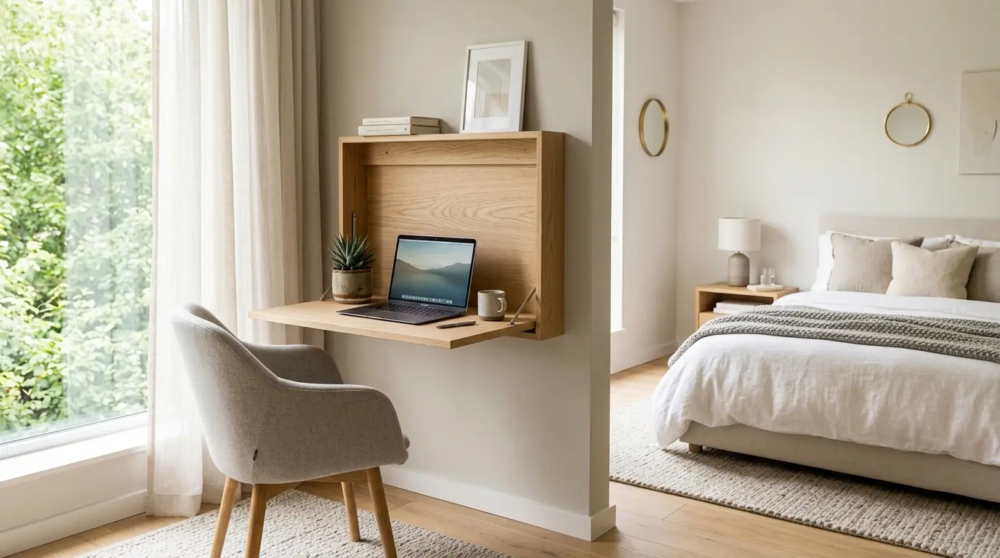

Mengapa Harus Memilih Rekomendasi Meja Lipat Kerja Minimalis di Kamar?
Tren kerja jarak jauh (remote work) dan kebutuhan area belajar mandiri membuat ruang kamar tidur kini berfungsiganda sebagai area produktif. Namun, menaruh meja kantor berukuran besar seringkali membuat kamar terasa sangat sempit dan sesak. Di sinilah keberadaan rekomendasi meja lipat kerja minimalis menjadi solusi yang sangat jenius.
Meja lipat menawarkan fleksibilitas yang tidak dimiliki meja konvensional. Saat jam kerja selesai, Anda dapat dengan mudah melipat permukaan meja ke dinding atau menyimpannya di celah lemari. Hasilnya, area kamar tidur tetap luas, rapi, dan fokus kembali menjadi tempat beristirahat yang nyaman.
Menurut Survel Interior Ruang Kerja Rumah 2026, penggunaan meja berdesain lipat hemat tempat mampu menghemat penggunaan luas lantai hingga 70 persen dibandingkan meja tulis statis. Selain itu, suasana kamar yang tertata tanpa tumpukan perabot berlebih terbukti menurunkan tingkat stres pekerja hingga 35 persen.
Jika Anda ingin membangun stasiun kerja rumah yang efisien tanpa mengorbankan estetika kamar, pastikan Anda melengkapi fasilitas kerja dengan paket meja dan sarana Perlengkapan Kantor terbaik dari layanan kami.
- Menghemat hingga 70% space lantai kamar saat tidak digunakan.
- Dapat dipasang pada ketinggian yang disesuaikan secara ergonomis.
- Tersedia dalam balutan warna kayu natural dan netral yang cocok untuk semua gaya interior.
Apa Saja Jenis dan Model Meja Lipat Kerja Paling Populer?
Sebelum membeli rekomendasi meja lipat kerja minimalis, pahami beberapa model favorit yang dirancang sesuai kondisi tata ruang kamar Anda:

Desain meja lipat kerja minimalis dinding (wall-mounted) — solusi hemat tempat dan estetis untuk area kamar tidur berukuran mungil.
- Meja Lipat Dinding (Wall-Mounted Folding Desk) — Dipasang langsung menempel di dinding dengan siku engsel lipat (folding bracket). Sangat irit tempat dan bisa menyatu dengan rak gantung di atasnya.
- Meja Kerja Portable Rangka Besi Lipat — Meja dengan kaki besi hollow yang bisa dilipat pipih saat tidak dipakai. Tidak membutuhkan bor dinding dan mudah dipindahkan ke sudut kamar manapun.
- Meja Kabinet Lipat (Ambalan Dropleaf Desk) — Mengombinasikan fungsi lemari kabinet dinding kecil dengan daun meja yang bisa dibuka-tutup. Sangat rapi untuk menyimpan perlengkapan tulis dan laptop.
Bagaimana Kriteria Memilih Meja Lipat Kerja yang Kokoh dan Ergonomis?
Agar meja lipat kerja minimalis awet dan nyaman digunakan sehari-hari, perhatikan kriteria penting berikut:
- Kualitas Material Papan Meja — Pilih bahan Multipleks/Plywood berkualitas berlapisan HPL (High Pressure Laminate) atau kayu solid yang tahan goresan dan tidak mudah melengkung.
- Kekuatan Engsel dan Rangka (Folding Bracket) — Gunakan siku engsel lipat berbahan baja stainless padat dengan mekanisme pengunci otomatis (auto-lock) saat meja dibuka.
- Ukuran Permukaan Ideal — Luas permukaan minimal 80 x 45 cm sudah sangat ideal menampung laptop 14-15 inci, mousepad, serta cangkir minuman.
- Ketinggian Pemasangan Presisi — Untuk meja dinding, pasanglah pada posisi tinggi 72-75 cm dari permukaan lantai untuk menjaga posisi lengan dan bahu tetap rileks.
| Tipe Meja Lipat | Beban Maksimal | Kelebihan Utama |
|---|---|---|
| Lipat Dinding (Folding Bracket) | 25 kg - 40 kg | Zero floor space, tinggi fleksibel, sangat rapi. |
| Kaki Besi Portable | 30 kg - 50 kg | Tanpa instalasi dinding, kokoh, mudah dipindah. |
| Kabinet Wall Desk | 20 kg - 35 kg | Dilengkapi rak penyimpanan alat tulis di dalam. |
Bagaimana Tips Menata Ruang Kerja Hemat Tempat di Kamar Tidur?
Menata rekomendasi meja lipat kerja minimalis di dalam kamar tidur memerlukan sedikit trik tata pencahayaan dan organisasi agar aktivitas kerja tidak mengganggu kualitas tidur:
- Posisikan meja di dekat jendela untuk mendapatkan pencahayaan alami alami yang menyegarkan mata.
- Gunakan lampu meja LED minimalis berdesain jepit (clamp light) agar tidak memakan ruang permukaan meja.
- Padukan dengan kursi kerja minimalis beroda yang bisa diselipkan dengan rapi di bawah meja.
- Pastikan seluruh kabel tertata menggunakan kabel manajemen fleksibel agar area kamar tetap bersih.
Pertanyaan Populer Seputar Meja Lipat Kerja (FAQ)
Kesimpulan Praktis
Menggunakan rekomendasi meja lipat kerja minimalis adalah pilihan paling cerdas untuk mewujudkan sudut kerja fungsional tanpa mengorbankan kenyamanan kamar tidur Anda. Pilih model meja lipat berkualitas tinggi dengan engsel kokoh dan material tahan lama.
Dapatkan berbagai penawaran set meja kerja, kursi ergonomis, dan paket Perlengkapan Kantor terlengkap dari tim kami sekarang juga!

Penulis: Ardhana Prasasta
Spesialis konten & konsultan furnitur tata ruang kantor di Perlengkapan Kantor. Berpengalaman dalam memberikan panduan solusi ergonomis, efisiensi ruang kerja, dan pengadaan perlengkapan kantor korporat.